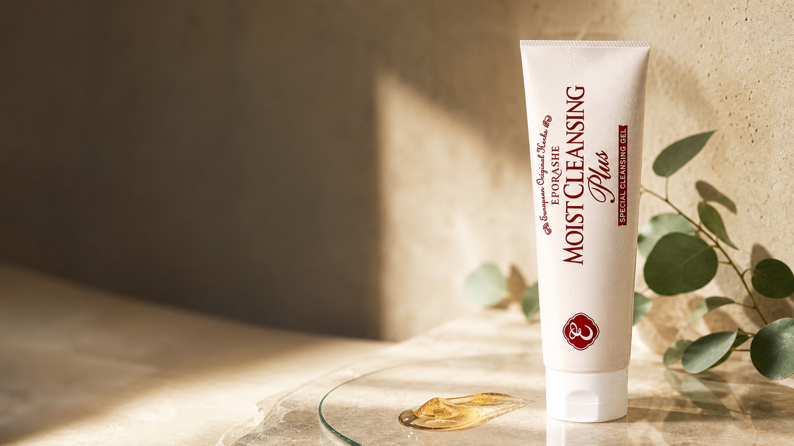

植物オイルで
メイクを包み込む
米ぬか油とコーン油を配合。もっちりとしたジェルがメイクになじみ、やさしく洗い流します。

MOIST CLEANSING PLUS
植物オイルと美容液成分を抱え込んだ濃密ジェル。
落とす時間を、肌をいたわる時間へ。
9点セット・送料無料／お一人様1点まで

250mL
5,500円（税込）

FOR YOUR SKIN
しっかりメイクを落としたい。でも、洗い上がりのつっぱりや乾燥は気になる。そんな相反する気持ちに寄り添うために生まれました。
WHY MOIST CLEANSING PLUS
米ぬか油とコーン油を配合。もっちりとしたジェルがメイクになじみ、やさしく洗い流します。
クレンジングと同時に、古い角質によるくすみをケア。洗うたび、なめらかな肌印象へ。
ヘマトコッカスプルビアリスエキスやアロエベラ葉エキスなどを配合しています。

JELLY TEXTURE
厚みのあるジェルがクッションのように肌を包み、メイクとなじみます。オレンジ色は配合成分によるものです。
OUR STORY
「保湿感はそのままで、マスカラもしっかり落としたい」。その声に応えるため、植物オイルと濃密ジェルの処方を追求しました。


HOW TO USE
さくらんぼ1粒大が目安。乾いた手でお使いください。
 STEP 1
STEP 1さくらんぼ1粒大を目安にとります。
 STEP 2
STEP 2メイクとなじむよう、顔全体に広げます。
 STEP 3
STEP 3水またはぬるま湯で洗い流します。W洗顔は不要です。
CUSTOMER VOICE
購入者アンケート（2025年10月実施・142名）より
「毎日使ってもつっぱらないので、休日も日焼け止めを塗る習慣がつきました。」
城山さん（一部抜粋）「洗浄力を求めると肌がつっぱっていましたが、潤いは残りつつ、落としたいものが落ちます。」
近田さん「ふわふわとした印象のテクスチャー。肌へのやさしさと、しっかりとした洗浄力を両立しています。」
松本さん（一部抜粋）※個人の感想です。使用感には個人差があります。
CHOOSE YOUR FIRST STEP

モイストクレンジングプラスほか8点
990円（税込）
9点セット・送料無料
お一人様1点まで

モイストクレンジングプラス
1,980円（税込）
この商品だけを
じっくり試したい方に
モイストクレンジングプラス
5,500円（税込）
約1〜1.5ヶ月分
たっぷり使いたい方に
🔁 定期便なら最大20%OFF。詳しくは商品ページをチェック。
ラウリン酸ポリグリセリル-10、グリセリン、乳酸桿菌／セイヨウナシ果汁発酵液、アスペルギルス／(マンダリンオレンジ×スイートオレンジ果実／コメ／イチゴ果実)発酵液、グレープフルーツ果皮油、コメヌカ油、コレステロール、セラミドAP、セラミドEOP、セラミドNP、トウモロコシ胚芽油、トコトリエノール、トコフェロール、グリチルリチン酸2K、ヘマトコッカスプルビアリスエキス、ヒアルロン酸Na、アロエベラ葉エキス、エチルヘキシルグリセリン、カルボマー、キサンタンガム、クエン酸、クエン酸Na、乳酸、フィトスフィンゴシン、トリ（カプリル酸／カプリン酸）グリセリル、ラウロイルラクチレートNa、異性化糖、水酸化K、水添レシチン、(アクリロイルジメチルタウリンアンモニウム/VP)コポリマー、1,2-ヘキサンジオール、BG、t-ブタノール、フェノキシエタノール
お肌に異常が生じていないかよく注意して使用してください。お肌に合わないときは、ご使用をおやめください。